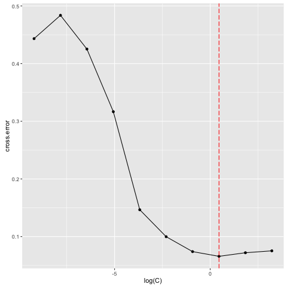
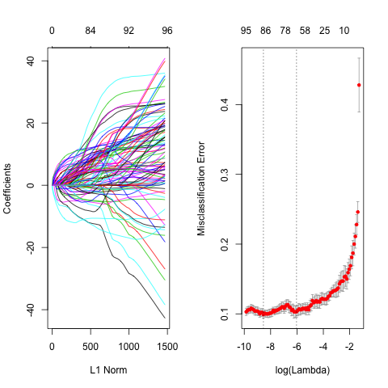
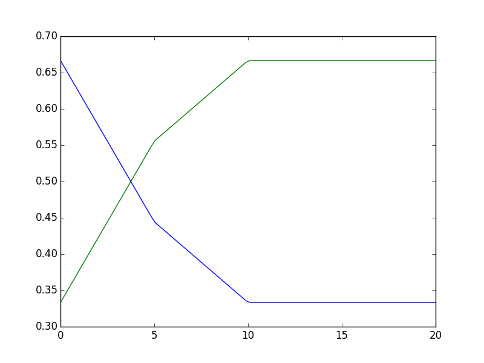
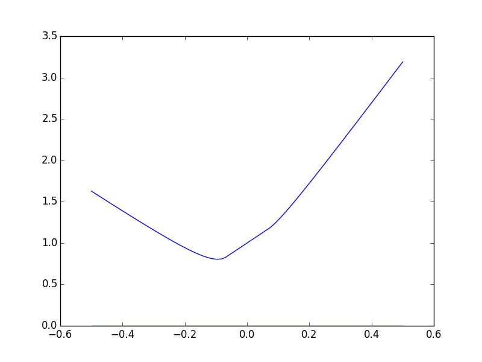
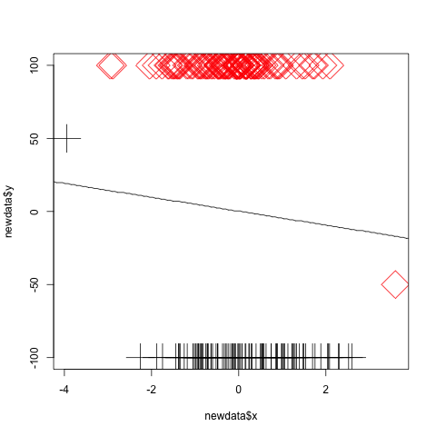

Problem set 4, ORF525
1 Q1
1.1) a) Some helper functions
library(png) library(kernlab) library(ggplot2) library(glmnet) source("functions.R") crop <- function(img) crop.r(img, 160, 96) take.grad <- function(img) grad(img, 128, 64, F) take.hog <- function(grad.img) hog(grad.img$xgrad, grad.img$ygrad, 4, 4, 6) plt.grad <- function(grad.img, h=128, w=64, ...) { plot(c(),c(), asp=1, xlim=c(0,70), ylim=c(0,130), xlab="X", ylab="Y", ...) for (i in 1:h){ for (j in 1:w){ arrows(x0=j, y0=h+1-i, x1=j+grad.img$xgrad[i,j]*5, y1=h-i+1+grad.img$ygrad[i,j]*5, length=0.01) } } } plt.gray <- function(img.gray, ...) image(t(img.gray)[, nrow(img.gray):1], col = gray((0:32)/32), ...) load.from.directory <- function(dir) { images = list() img <- sample(list.files(dir), size=1) return(readPNG(file.path(dir, img))) }
Load images, convert to gray, crop if necessary, and then calculate the gradient / hod
image.pos <- load.from.directory("pngdata/pos") image.neg.uncropped <- load.from.directory("pngdata/neg") image.neg.gray.uncropped <- rgb2gray(image.neg.uncropped) image.pos.gray <- rgb2gray(image.pos) image.neg.gray <- crop(image.neg.gray.uncropped) grad.pos <- take.grad(image.pos.gray) grad.neg <- take.grad(image.neg.gray) hog.pos <- take.hog(grad.pos) hog.neg <- take.hog(grad.neg) 0
And then plot
b) Prepare the dataset
# load all images from directory load.all.directory <- function(dir) { images = list() for(img in list.files(dir)) { images[[img]] <- readPNG(file.path(dir, img)) } return(images) } # extract features feature.pos.img <- function(img) c(1, take.hog(take.grad(rgb2gray(img)))) feature.neg.img <- function(img) c(0, take.hog(take.grad(crop(rgb2gray(img))))) pos.images <- load.all.directory("pngdata/pos") neg.images <- load.all.directory("pngdata/neg") data <- c( unname(lapply(pos.images, feature.pos.img)), unname(lapply(neg.images, feature.neg.img)) ) data <- sapply(data, identity) # construct data frame df <- data.frame(t(data)) colnames(df) <- c("label", paste("F",1:96, sep='_')) df[1:3, 1:5]
1.2)
\(\log(C)\) take values in a uniform grid of 100 points of \([-4, 2]\). For each value, we evaluate the cross validation error of the corresponding SVM and we plot the result.
# SVM logspace <- function(s, e, n=100) 10^((1:n-1) / n * (e-s) + s) C <- logspace(-4, 2, 10) formula <- as.formula(paste("label", paste(colnames(df)[-1], collapse='+'), sep='~')) cross.error <- sapply(C, function(c) {ksvm(formula, df, cross=10, C=c)@cross}) C.best <- C[which.min(cross.error)] C.best

- Now we use glmnet
x <- t(data[2:nrow(data),]) y <- data[1, ] logit.model <- glmnet(x, y, family="binomial") cvlogit.model <- cv.glmnet(x, y, family = "binomial", type.measure="class")

Compare
Table 1: Cross validation classification error SVM Logit 1st Lambda Logit min Lambda 0.066 0.103 0.099
2 TODO Q2
(a)
\(p(x) = p(x | Y = 1) p(Y = 1) + p(x | Y = -1) p(Y = -1) = \frac13 \frac{1_{[-5, 10]}}{15} + \frac23 \frac{1_{[-10, 5]}}{15}\)
\[p(y | x) = \frac{ p(x | y)}{p(x)} p(y) \equiv \left\{\begin{array}{cc} p(Y = 1) p(x | Y=1) & \text{if } y = 1\\ p(Y = -1) p(x | Y=-1) & \text{if } y = -1 \end{array}\right. \]
The bayes classifier \(B(x) := \arg \max_{y \in \{0, 1\}} p(y | x)\) \[B(x) = 1 \iff p(Y = 1)p(x|Y=1) \ge p(Y = -1)p(x|Y=-1) \iff 1_{[-5, 10]}(x) \ge 2 \times 1_{[-10, 5]}(x) \iff x \in (5, 10)\]
\[B(x) = \left\{\begin{array}{cc} 1 & \text{if } x \in (5, 10)\\ -1 & \text{o.w} \end{array} \right. \]
Bayres Risk \(R(B) = E[1_{B(X) \ne Y}] = P(Y = 1, X \in (-5, 5)) = P(X \in (-5, 5) | Y = 1)P(Y = 1) = \frac23 \times \frac13 = \frac29\)
(b) \(R(h) = E[1_{h(X) \ne Y}] = P(sign(\alpha + \beta X^2) < 0 | Y = 1)P(Y = 1) + P(sign(\alpha + \beta X^2) > 0 | Y -= 1)p(Y = -1) = \frac13 \left( P_{U \sim \mathcal U([-5, 10])}(sign(\alpha + \beta U^2) < 0) + 2 P_{U \sim \mathcal U([-10, 5])}(sign(\alpha + \beta U^2) > 0)\right)\)
If \(\alpha\) and \(\beta\) have the same signs, then \(\alpha + \beta X^2\) keeps a constant sign. If not, then \(\alpha + \beta X^2\) has two roots \(\pm \sqrt{\frac{-\alpha}{\beta}}\), and has the sign of \(\alpha\) only between them. Let \(r = \sqrt{\frac{-\alpha}{\beta}}\) Cases:
- \(\alpha = 0, \beta = 0\) ??
- \(\alpha \ge 0, \beta > 0\) or \(\alpha > 0, \beta \ge 0\), \(sign(\alpha + \beta X^2) = 1\), \(R(h) = \frac13\)
- \(\alpha \le 0, \beta < 0\) or \(\alpha < 0, \beta \le 0\), \(sign(\alpha + \beta X^2) = -1\), \(R(h) = \frac23\)
- \(\alpha < 0, \beta > 0\), \(sign(\alpha + \beta X^2) = 2 \times 1_{x \in (\pm \sqrt{\frac{-\alpha}{\beta}})} - 1\): \(R(h) = \frac13 \frac{1}{15} \left( (10 \wedge r)+ (5 \wedge r) + 2( (5-r)^+ + (10-r)^+) \right)\) \[R(h) = \frac1{45}\left\{\begin{array}{ccc}15 &\text{if} & r \ge 10\\ r +5 + 2(10-r)=25-r &\text{if} & 5 < r < 10\\ 2r+2(5-r + 10-r) = 30 - 2r &\text{if} & r \le 5 \end{array} \right.\]
- \(\alpha > 0, \beta < 0\), can be deduced from the last question because \(sign(\alpha + \beta x^2) = - sign(-\alpha - \beta x^2)\)

Figure 3: Bayess Error
One possible solution is \(\alpha = -1\), \(\beta = 0\), and the risk is \(R(h) = \frac13\)
(c)
\begin{align*} R_{\Phi}(\beta) &= E[(1 - Y\beta X)^+] = E[(1 - \beta U_1)^+] p(Y = 1) + E[(1 + \beta U_2)^+] p(Y = -1) \\&= \frac13 \int_0^1 (1 - \beta (15 u - 5))^+ + 2 (1 + \beta (15 u - 10))^+ du \\&= \frac13 \int_0^1 (1 - 15 \beta (u - \frac13))^+ + 2 (1 + 15 \beta ( u - \frac23))^+ du \end{align*}
Figure 4: Hinge Error
3 Q3
3.1. \(f(x) = \frac1{\sqrt{2\pi|\Sigma|}} e^{\frac12 x'\Sigma^{-1}x}\)
\[p(y | x) \equiv p(Y = y) p(X = x | Y = x) = \left\{\begin{array}{cc}p f(x-\mu_1) & \text{if } y = 1\\(1-p) f(x-\mu2) & \text{ if } y = -1\end{array}\right.\]
bayes estimator:
\begin{align*} B(x) = 1 \iff \frac{f(x - \mu_1)}{f(x - \mu_2)} \ge \frac{1-p}p & \iff (x-\mu_1)'\Sigma^{-1}(x-\mu_1) - (x-\mu_2)'\Sigma^{-1}(x-\mu_2) \ge \log\frac{1-p}p \\ & \iff x \underbrace{2\Sigma^{-1}(\mu_2 - \mu_1)}_{\omega} \ge \underbrace{\log\frac{1-p}p + \mu_2'\Sigma^{-1}\mu_2 - \mu_1'\Sigma^{-1}\mu_1}_{-b} \\ & \iff sign(x.w + b) = 1 \end{align*}MLE (see ORF524):
- \(\hat p = \frac1n \sum_{i=1}^n 1_{Y_i = 1}\)
- \(\hat \mu_j = \frac1{n_j} \sum_{(Y_i, X_i) \in D_j} X_i\) where \(j = 1,2\)
- \begin{align*} \hat \Sigma &= \frac1n \left[ \sum_{(Y_i, X_i) \in D_1} (x_i-\hat \mu_1)(x_i-\hat \mu_1)^T + \sum_{(Y_i, X_i) \in D_2} (x_i-\hat \mu_2)(x_i-\hat \mu_2)^T \right] \\&= \frac1n \left[ \sum_{(Y_i, X_i) \in D_1} x_ix_i^T- \hat \mu_1\hat \mu_1^T + \sum_{(Y_i, X_i) \in D_2} x_ix_i^T- \hat \mu_2\hat \mu_2^T \right] \\&= \frac1n \sum_i x_ix_i^T - \frac{n_1}n \hat \mu_1\hat \mu_1^T - \frac{n_2}n \hat \mu_2\hat \mu_2^T \end{align*}
Let \(\hat \omega := 2 \hat \Sigma^{-1}(\hat \mu_2 - \hat \mu_1), \hat b = \log\frac{1-\hat p}{\hat p} + \hat \mu_2'\hat \Sigma^{-1}\hat \mu_2 - \hat \mu_1'\hat \Sigma^{-1}\hat \mu_1\), then by plugging the precedent values we can see that the classifier can be expressed as \(sign(\hat \omega . x+ \hat b)\).
3.2 The function of \((\beta_0, \beta)\) is convex. First order condition gives:
- With respect to \(\beta_0\): \(\sum_i (Y_i - \beta_0 - X_i^T\beta) = 0 \implies \beta_0 = \frac1n \underbrace{\sum_i Y_i}_{0} - \frac1n \sum_i X_i^T \beta = - \underbrace{\frac1n(n_1\mu_1 + n_2\mu_2)'}_{\mu}\beta\)
- With respect to \(\beta\):
So \(\hat \beta \equiv \hat w\)
3.3 An example where LDA fails but the data is linearly separable:

Figure 5: Fail LDA
4 Q4
4.1. Let \(y_1, \ldots, y_n\) be any labeling, and let \(w = \gamma (y_1, \ldots, y_n)\), then: \(y_i (w, e_i) = y_i^2 \gamma = \gamma\)
Let \(D_0 = \{e_1, \ldots, e_{\frac d2} \}\), \(D_1 = \{e_{\frac d2 + 1}, \ldots, e_d\}\) Take \(s\) samples from \(D_0\) and \(s\) sample from \(D_1\)
- Label all points in \(D_0\) by 1 except the one in the sample
- Label all points in \(D_1\) by -1 except the one in the sample
Take \(w\) to be the seperating vector. Then \(w\) classifies correctly the \(2s\) points in the sample but missclassifies the rest of the points \(d - 2s \ge \frac d3\) 4.2. Let \(j\) be the first index for which \(x_j = 1\) \(\sum_{i=1}^d \frac{(-1)^{i-1}}{2^{i-1}} x_i = \frac{(-1)^{j-1}}{2^{j-1}} ( 1 + \underbrace{\sum_{i=1}^{d-j} \frac{(-1)^{i}}{2^{i}} x_{i+j}}_{ <1})\) So this quantity has the the same sign as \((-1)^{j-1}\), which is what we want.
Suppose we could have another linear seperator with \((a_1, \ldots, a_d)\) s.t \(\sum_i a_i^2 = 1\) with margin \(\frac1{f(d)}\), then
\(\sum_{i=1}^d a_i x_i = a_j + \sum_{i=j+1}^{d} a_i x_i\)
- For all \(x\) in the $d$-cube, \(a_{2j} + \sum_{i=2j+1}^{d} a_i x_i \ge \frac1{f(d)} \implies |a_{2j}| \ge \sum_{i=2j+1}^{d} |a_i| + \frac1{f(d)}\)
- Using the same argument: \(|a_{2j-1}| \ge \sum_{i=2j}^{d} |a_i| + \frac1{f(d)}\) As a conclusion, \(|a_j| \ge \sum_{i=j+1}^{d} |a_i| + \frac1{f(d)}\). Consider the sequence \(u_j\) definied by: \(u_d = a_d, u_j = \sum_{i=j+1}^d u_i + \frac{1}{f(d)}\)
By induction we can easily see that:
- \(u_j \le |a_j|\) and
- \(u_1 = 2^{d-1} u_d + (2^{d-1} -1)\frac1{f(d)} \ge (2^{d-1} -1)\frac1{f(d)}\)
Since \(|a_1| \le 1\): \(1 \ge a_1 \ge u_1 \ge (2^{n-1}-1)\frac{1}{f(d)}\) Therefore \(f(d) \ge 2^{d-1}-1\)
So \(f(d)\) cannot be bounded by a polynomial from above.